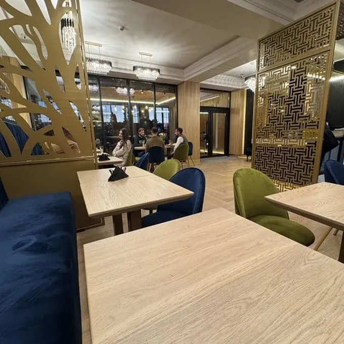

Revine pentru cappuccino, croissante și mojito fără alcool. Muzica îi face vizitele mai plăcute.
Ionela N. · Google Maps


Din atelier,
la o cafea.
CAF a pornit din atelierul ArtLegno Porte&Scale, unde se fac uși, scări și parchet din lemn. După prima cafenea din Botoșani, am deschis ușa din Dorohoi pe 7 martie 2025. Aici, lucrul cu lemnul a continuat la bar, la mese și în detaliile pe care le descoperi când te așezi.
Descoperă atelierulFiecare masă
are o poveste.
De la bar și mese până la placarea pereților, echipa ArtLegno a lucrat interiorul în atelierul propriu. Fibra rămâne la vedere, iar fiecare îmbinare a fost gândită pentru locul ei.



- 100%Lucrat în atelier propriu
- Lemn masiv
- Detaliu cu detaliuDe la bar până la ultima îmbinare
Cafea și ceva bun
Meniul CAF
Exemplu de meniu și prețuri. Oferta actuală se confirmă la cafenea.

Spațiul
Loc de întâlniri, de lucru sau de liniște. La o cafea, cu muzică bună în fundal.
O privire în cafenea.
Vezi cum arăta CAF Dorohoi la inaugurarea de pe Bulevardul Victoriei, filmată de Dorohoi News.
Vezi pe YouTubeCe spun oaspeții
Selecție de recenzii rezumate
A apreciat cafeaua aromată și personalul amabil. Recomandă locul pentru o pauză sau pentru cafeaua de dimineață.
Laura C. · Google MapsA remarcat atmosfera primitoare, atenția la detalii și felul în care sunt prezentate produsele.
Luci P. · Google MapsNe vedem la CAF.
Deschide Google MapsCAF Dorohoi
Bulevardul Victoriei, Dorohoi Vizavi de PennyZilnic, 07:00–22:00
+40 756 764 805 DirecțiiCAF Botoșani
Calea Națională nr. 61, BotoșaniProgram [COMPLETEAZĂ]
Direcții